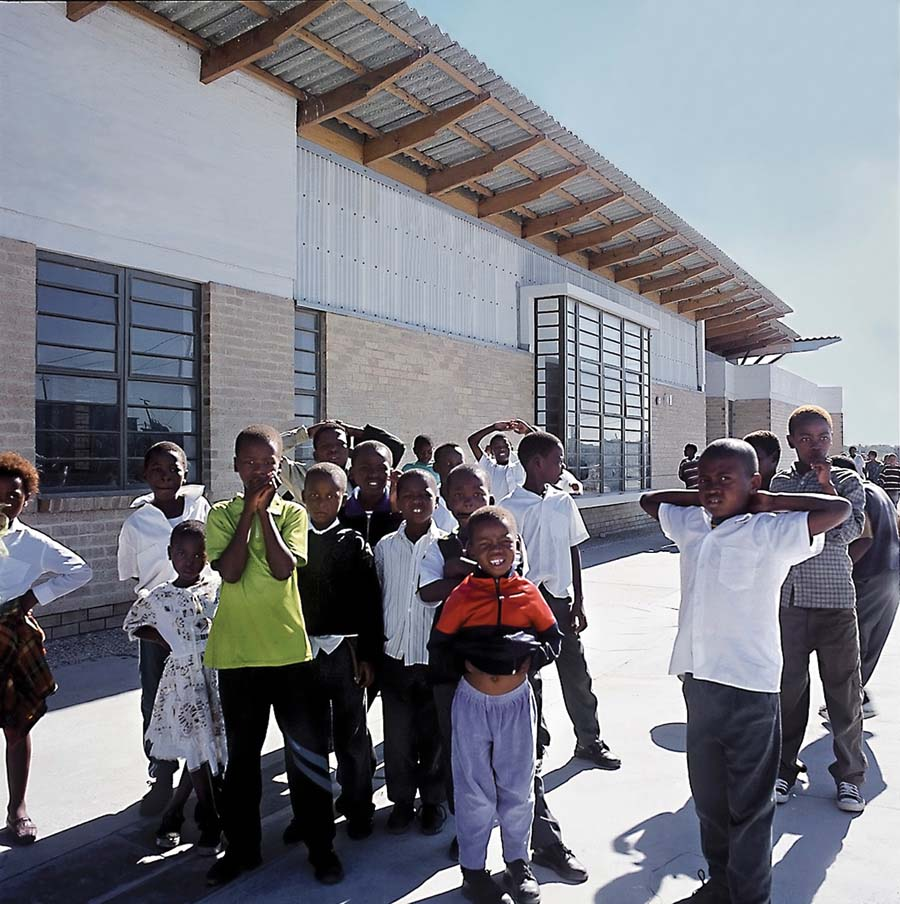

7784 Mfuleni
Khayelitsha
Western Cape
South Africa


Mzamomtsha Primary School is located between Khayelistha Township and Umfuleni Township in the Western Cape Province of the Republic of South Africa. The schools headmaster, Mr. Simphiwe Khuze, joined in 2007. The school is located in a semi-township called Drift Sands which started off as an informal settlement.
Drift Sands has since been developed and with support from the South African government it turned into a sprawling township with state of the art housing units. Mzamomtsha Primary School is plays a key role in Drift Sands and is supporting the local community.
